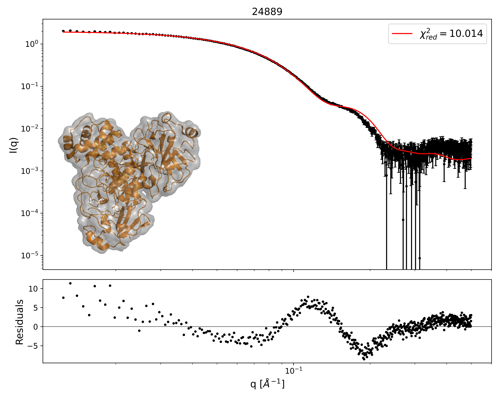

Home
Tutorial: Comparing with Electron Microscopy
Tutorial contributors: Kristian Lytje

Before you start
- Requirements:
(1) The AUSAXS software (free, no installation).
(2) Python (including numpy, scipy, and matplotlib) to visualize the results.
- Expectations:
In this tutorial, we will compare small-angle X-ray scattering data with electron microscopy data.
These are very different techniques, with the former probing the electron density of the sample, and the latter probing the charge density.
We are therefore not expecting perfect quantitative agreement, but will rather focus on comparing them qualitatively.
Learning outcomes
In this tutorial you will learn how to use the EM validation program of the AUSAXS software to compare SAXS data with electron microscopy data.- Be familiar with the AUSAXS software.
- Be able to validate an electron microscopy map.
- Be able to use the advanced options of the program.
Introductory remarks
This tutorial will only showcase how to use the method, and will not go into the details of the theory behind it.
For more information on the theory, see the accompanying article at https://doi.org/10.1107/S2059798324005497.
Part I: Making AUSAXS run on your computer
AUSAXS ships with two versions: one with a simple, graphical interface, and another with a more advanced command-line interface.Both versions can be used for the first part of this tutorial, but the advanced version is required for the second part.
- To use AUSAXS:
- Download the newest release from https://github.com/AUSAXS/AUSAXS/releases
- Since Microsoft & Apple both require yearly fees to sign a program, an additional platform-dependent step must be performed to make it runnable on these systems:
- Windows: Your SmartScreen filter may warn you about running unsigned software. You can simply ignore this warning and run it anyway.
- Mac: Downloaded unsigned programs
Part II: Performing a basic validation
Now we are ready to perform our first validation. Download the files:- The SAXS measurement,
- The EM map file,
- And, optionally, the PDB structure file. Remember to unpack the zipped map before continuing.
- Graphical interface:
If you have moved the program from the downloaded folder, make sure to also move the plotting script to the same destination.
Open the AUSAXS programem_fitter_guiand load the EM map and the SAXS data.
For this run only, set the "sample frequency" to 3 (and make sure to hit "enter"!). Then click the "start" button. - Command-line interface:
Move all files to the same directory, and launch a terminal from there.
Then run the command:em_fitter emd_24889.map SASDJG5.dat --frequency 3 - Windows:
plotter.exe - Mac or Linux:
python scripts/plot.py - Identify a subject that should be covered with a tutorial.
- Consider overall and specific learning outcomes.
- Design 1-3 challenges that can be solved after requiring the skills of the tutorials. Preferably including analysis of real SAXS or SANS data.
- Copy the SASTutorial GitHub page to your computer.
- Copy the template folder and rename it.
- To edit the html files, you must open them in a text editor, if you open them in a browser, you see the final result.
- Make 2-4 parts in the tutorial with walk-through and explained analysis, providing files so the user can do the analysis themself. Explain rule-of-thumbs and pitfalls, og technical challenges. Use images for illustarations, e.g. screenshots from a software package that is demonstrated.
- Find a representative image for the tutorial, make it square format and put in the folder.
- Add your tutorial to the index file (copy one of the other entries and edit).
- Check that everything is working. This can be done locally, in a browser.
- Upload your new tutorial and the edited index file to the GitHub page (this will be checked by developers before being merged and thus be part of the sastutorials.org website).
- Challenge 1: Download this tutorial and add a new part (Part 5) to the tutorial. To see the result, open in a browser, and to edit files, open in a text editor.
- Challenge 2: Add a tutorial to SAStutorials.org, on any aspect of SAXS/SANS analysis that is not yet covered.
- Reporting issues and bugs via our GitHub page. This could be typos, dead links etc., but also insufficient information or unclear instructions.
- Suggesting new tutorials/additions/improvements in the SAStutorials forum.
- Posting or answering questions in the SAStutorials forum.
- When the program is done, run the following plotting command:
Part III: Insert images (and make it square if used as main illustration)
Images can be inserted in the tutorial

<img src="Template.png" style="width:150px">
Images make the tutorials visually appealing and help explain key concepts and results.
If you have a picture that you want to user as cover illustration for you tutorial (to appear at sastutorial.org front page), it should be square format.
If it is not, you can, e.g., insert it in a power point, and adjust the size (Design -> Slide size), and export it as an image

Try to download this tutorial (right-click > save file as), and change the cover photo (adjust dimensions of the new cover photo if necessary)
Part IV: Higlight with a box
If you have something to highlight (a concept, a check list, a step-by-step guide), it can be highlighted. E.g. this list
<ol style="border-width:3px; border-style:solid;border-color:#697698; padding: 1em; padding-left: 40px; background-color: #f9f9f9">
<b>How to design a new tutorial:</b>
<li>...<\li>
<ol>
-
How to design a new tutorial: